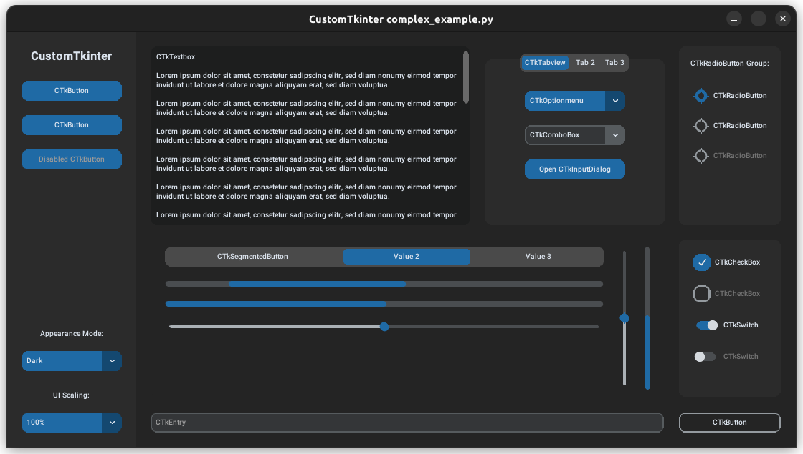
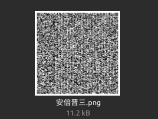
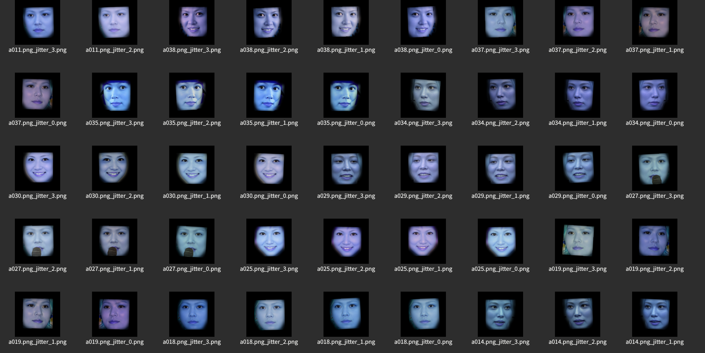
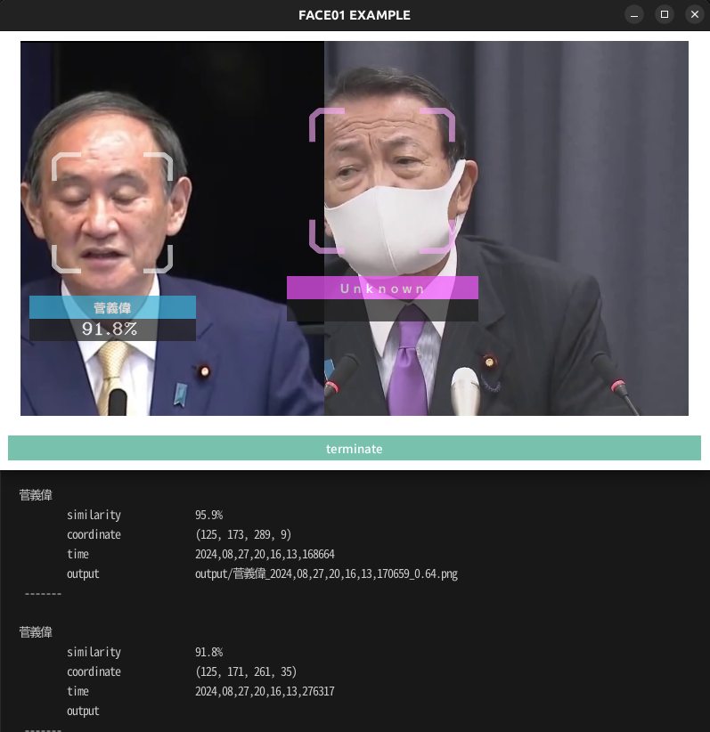
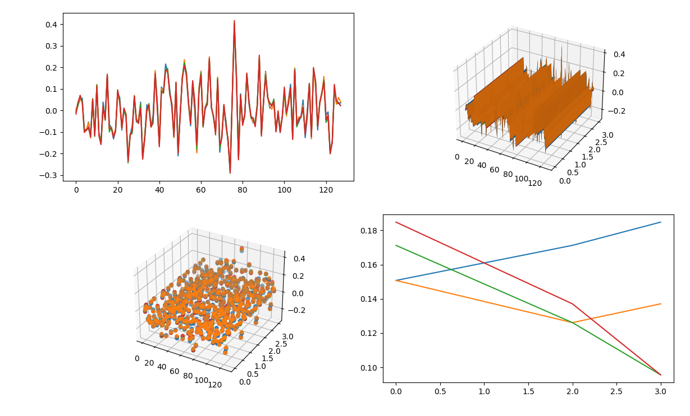

example package
Submodules
example.CTKtest module
CustomTkinterの使用例.
- Summary:
このエグザンプルコードはCustomTkinterを使用してGUIアプリケーションを構築する際の例になります。 CustomTkinterで紹介されているコードをそのまま掲載しています。 TkinterよりリッチなGUIを使用したい場合に検討してください。 このコードを実行するには開発用パッケージを追加インストールする必要があります。 具体的にはrequirements_dev.txtをインストールしてください。
pip install -r requirements_dev.txt
サンプル
python3 example/CTKtest.py
- Result:
- 
- Source code:
{kind=link}
example.aligned_crop_face module
顔画像を検出、回転、クロップするコード例.
- Summary:
このエグザンプルコードでは、整列された(aligned)顔画像を取得する例を示します。
- param path:
顔画像が存在するディレクトリパス
- type path:
str
- param size:
抽出する顔画像のピクセル数を整数で指定します。デフォルトは400です。
- type size:
int, optional
- Usage:
python3 example/aligned_crop_face.py <path> <size>
- Result:

# Initialize
CONFIG: Dict = Initialize('DEFAULT', 'info').initialize()
# Set up logger
logger = Logger(CONFIG['log_level']).logger(__file__, CONFIG['RootDir'])
{kind=link}
初期化とloggerのセットアップ. FACE01を使用してコーディングするときは、'initialize'と'logger'を最初にコードします。 これにより、設定ファイルであるconfig.iniファイルを読み込み、ログレベルなどを決定します⭐️''
- Image:
- Source code:
example.anti_spoof module
アンチスプーフ機能を試すエグザンプルコード.
- Summary:
極めて簡単にマルチモーダルのためのQRコードを作成します。 洗練されたQRコード作成を作成したい場合は 'example/make_ID_card.py'を参照してください。
サンプル
python3 example/anti_spoof.py
- Results:
スクリーンショットは作成されるQRコードを示しています。

{kind=link}
example.average_face module
平均顔を作成するコード例.
- Summary:
このエグザンプルコードでは、average_face.txtにリストされたファイル名を持つ顔画像を読み込み、 それらの画像から平均顔を作成する手順を学びます。
サンプル
python3 example/average_face.py
example.benchmark_CUI module
顔認識のベンチマークをとるエグザンプルコード例.
- Summary:
このコード例では、CUIモードでのベンチマークテストを行う方法を示します。 このベンチマークテストを行うには開発用パッケージを追加インストールする必要があります。 具体的にはrequirements_dev.txtをインストールしてください。
pip install -r requirements_dev.txt
実行後、ベンチマークが自動的にブラウザで表示されます。 終了するには、このエグザンプルが実行されているターミナル（またはコンソール）で「Ctrl + C」を押してください。
{kind=link}
サンプル
python3 benchmark_CUI.py
- Source code:
example.benchmark_GUI_window module
example.combination_counter module
組み合わせ計算の例.
- Summary:
Zennの記事のコード例です。 顔データセットの組み合わせ総数を計算します。
【faiss】なにこれすごい。顔データセットの間違い探し 成功編③
npKnown.npzファイルが見つからない場合、npKnown.npzファイルを作成します。 詳しくは上記記事をご参照ください。
サンプル
python3 combination_counter.py
- Source code:
example.combination_similarity module
顔画像ファイルの全組み合わせを計算する例.
- Summary:
このシンプルなコード例では、日本人専用として学習された顔学習モデルであるJAPANESE FACE V1を用いて、顔画像同士の全ての組み合わせを計算し、 類似度が高い組み合わせをhtmlファイルとしてプロジェクトルートディレクトリに'output.html'として保存します。
顔画像ファイルが異なるディレクトリに配置され、また各ディレクトリにはすでに`npKnown.npz`ファイルが作成済みなものと想定しています。
このコードは`Zenn`の記事のコード例です。
【faiss】なにこれすごい。顔データセットの間違い探し 成功編③
詳しくは上記記事をご参照ください。 このコード例では組み合わせパターンが爆発的に大きくなると処理時間もそれに応じて爆発的に大きくなるコード例を示しています。
{kind=link}
サンプル
python3 example/combination_similarity.py
データセットの外れ値などを探す場合に有用なコード例です⭐️''
しかしデータセットが大きくなると、リンク先のように'faiss'を使う必要が出てきます。
- Source code:
example.data_augmentation module
データセットのデータ拡張コード例.
- Summary:
このエグザンプルコードでは、データセットのデータ拡張する方法に ついて学びます。
サンプル
python3 example/data_augmentation.py "/path/to/dir" "" "lens" 224 10 -0.1 0.1 0.01
- Result:
- 
- Source code:
{kind=link}
- example.data_augmentation.logger = <Logger /home/terms/bin/FACE01_DEV/example/data_augmentation.py (INFO)>
Initialize and Setup logger.
- example.data_augmentation.main(dir_path: str, size: int = 224, num_jitters: int = 10, initial_value: float = -0.1, closing_value: float = 0.1, step_value: float = 0.01)[ソース]
この簡単なコード例では、与えられたディレクトリパスから再帰的に ファイルを読み込み、それらに対してデータ拡張を行います。 この例でのデータ拡張は、FACE01のUtilsモジュールから、 樽型歪みとジッターを呼び出します。
- パラメータ:
dir_path (str) -- ターゲットディレクトリの絶対パス.
size (int, optional) -- 作成するイメージサイズ. Defaults to 224.
num_jitters (int, optional) -- ジッター回数. Defaults to 10.
initial_value (float, optional) -- 樽型歪みの初期値. Defaults to -0.1.
closing_value (float, optional) -- 終わり値. Defaults to 0.1.
step_value (float, optional) -- ステップ値. Defaults to 0.01.
- 戻り値:
ターゲットディレクトリから再帰的に読み込んだディレクトリごとに データ拡張したファイルを保存します。
樽型歪みをデータセットに加えることで、カメラのキャリブレーションが出来ない環境への耐性を高めます⭐️'' レンズの歪曲収差と対応方法 をご参照ください。
{kind=link}
example.data_augmentation_mp module
データ拡張をマルチプロセスで行うコード例.
- Summary:
このエグザンプルコードでは、時間のかかるデータ拡張においてマルチプロセス処理を行います。
サンプル
python3 example/data_augmentation.py "/path/to/dir" "" "lens" 224 10 -0.1 0.1 0.01 4
- Source code:
- example.data_augmentation_mp.logger = <Logger /home/terms/bin/FACE01_DEV/example/data_augmentation_mp.py (INFO)>
Initialize and Setup logger.
- example.data_augmentation_mp.main(dir_path: str, size: int = 224, num_jitters: int = 10, initial_value: float = -0.1, closing_value: float = 0.1, step_value: float = 0.01, max_workers: int | None = None)[ソース]
main メインメソッド
- パラメータ:
dir_path (str) -- ディレクトリパス
size (int, optional) -- 画像サイズ. Defaults to 224.
num_jitters (int, optional) -- ジッター処理回数. Defaults to 10.
initial_value (float, optional) -- 初期値. Defaults to -0.1.
closing_value (float, optional) -- 最終値. Defaults to 0.1.
step_value (float, optional) -- ステップ値. Defaults to 0.01.
max_workers (Optional[int], optional) -- 並行処理値. Defaults to None.
example.data_structure module
- Summary:
FACE01を使う上で知っておくべきデータ構造について学びます。
サンプル
python3 example data_structure.py
- Config.ini setting:
FACE01においてデータ構造は'config.ini'の設定に深く関係しています。 以下に記述された'config.ini'では、GUIウィンドウは描画しないface-detectionとface-recognition用です。
[DEFAULT] # [DEFAULT] section is for simple example. # This [DEFAULT] setting for only use CUI mode. # Also, This setting is for user who's PC is not installed Nvidia GPU card. # [DEFAULT] section is the inheritor of all sections. headless = True anti_spoof = False output_debug_log = False log_level = info set_width = 750 similar_percentage = 99.1 jitters = 0 preset_face_images_jitters = 10 upsampling = 0 mode = hog frame_skip = 5 number_of_people = 10 use_pipe = True model_selection = 0 min_detection_confidence = 0.6 person_frame_face_encoding = False same_time_recognize = 2 set_area = NONE movie = assets/test.mp4 user = passwd = rectangle = False target_rectangle = False draw_telop_and_logo = False default_face_image_draw = False show_overlay = False alpha = 0.3 show_percentage = False show_name = False crop_face_image = True frequency_crop_image = 5 crop_with_multithreading = False Python_version = 3.8.10 cpu_freq = 2.5 cpu_count = 4 memory = 4 gpu_check = True calculate_time = False show_video = False number_of_crops = 0
1行目の'headless'が'True'なら、CUIで動作します⭐️''
- Result:
以下に示す出力が得られます。 (The output string has been formatted to make it easier to read.)
frame_datas: { 'img': array([[[0, 0, 0], [0, 0, 0], ..., [0, 0, 0], dtype=uint8), 'face_location_list': [(165, 449, 287, 327), (240, 435, 391, 284)], 'overlay': array([[[ 0, 0, 70], ..., [ 88, 169, 127]], dtype=uint8), 'person_data_list': [ { 'name': '安倍晋三', 'pict': 'output/安倍晋三_2022,10,08,19,17,41,346789_0.2.png', 'date': '2022,10,08,19,17,41,344598', 'location': (165, 449, 287, 327), 'percentage_and_symbol': '99.7%' }, { 'name': 'Unknown', 'pict': 'output/安倍晋三_2022,10,08,19,17,41,346789_0.2.png', 'date': '2022,10,08,19,17,41,344598', 'location': (240, 435, 391, 284), 'percentage_and_symbol': '' } ] }
- データ構造:
'frame_datas_array'は以下に記述するような様々な情報を持つ辞書に似た変数です。
Dictionary
img: NDArray of a frame
face_location_list: List of face-coordinates
overlay: Shallow copy of img
person_data_list: List of person-coordinate which is included in 'face_location_list'
In addition, the 'person_data_list' variable is an array that contains the variables described below.
List
Dictionary
name: name
pict: Saved image's file name which is cropped by face-coordinate in a frame
date:
location: Face-coordinate
percentage_and_symbol: xx%
- Source code:
example.detect_eye_blink module
まばたきを検出するコード例.
- Summary:
このエグザンプルでは、目の瞬き検出を扱うコード例を示します。
サンプル
python3 example/detect_eye_blink.py
注釈
このコードを実行する際、入力されるソースには必ず1人だけのものを選ばなくてはいけません。 複数人を対象とすることはできません。
{kind=link}
注目すべきは瞬きの検出が1行で済んでいるところです！⭐️''
blink_detected: bool = self.spoof.detect_eye_blinks(self.current_frame_datas_array, CONFIG)
- Source code:
example.display_GUI_window module
GUI表示と顔認識データ出力の例。
- Summary:
In this example you can learn how to display GUI and output face recognition.
サンプル
python3 example/display_GUI_window.py
Results:
{kind=link}
'Core().common_process(self.CONFIG)'で得られたジェネレーターを'for'で回すだけで全ての情報が取得できるんです！⭐️''
- Source code:
参考
ttkbootstrap https://ttkbootstrap.readthedocs.io/en/version-0.5/themes.html
example.display_GUI_window_JAPANESE_FACE_V1 module
顔認識モデルとしてJAPANESE FACE V1を使用したGUIアプリケーションのコード例.
- Summary:
In this example you can learn how to display GUI and output face recognition.
サンプル
python3 example/display_GUI_window_JAPANESE_FACE_V1.py
Results:
{kind=link}
コンソール出力は以下のようになります。
岸田文雄
similarity 94.1%
coordinate (161, 711, 376, 496)
time 2024,08,17,14,16,05,135247
output output/岸田文雄_2024,08,17,14,16,05,141640_0.55.png
-------
- Source code:
example.distort_barrel module
- Summary:
樽型歪み画像をシミュレートするコード例です。
- param path:
顔画像ファイルが含まれる対象ディレクトリへのパス。
- param size:
解像度の指定。Default is 224px.
サンプル
python3 example/distort_barrel.py path size
# 初期化
CONFIG: Dict = Initialize('JAPANESE_FACE_V1_MODEL_GUI', 'info').initialize()
# ロガーの設定
logger = Logger(CONFIG['log_level']).logger(__file__, CONFIG['RootDir'])
この2行はお約束ですね⭐️''
1行目は設定ファイルを読み込み、2行目でロガーを指定しています💗
- Source code:
- example.distort_barrel.main(dir_path: str, align_and_resize_bool: bool = False, size: int = 224, padding: float = 0.1, initial_value: float = -0.1, closing_value: float = 0.1, step_value: float = 0.1) None[ソース]
このシンプルなコード例では、拡張子がpng, jpg, jpeg画像を含むディレクトリのパスを受け取り、樽型歪み処理をして、それらを保存します。
See also: Tokai-kaoninsho:レンズの歪曲収差と対応方法(6)
- パラメータ:
path (str) -- 絶対パス: 例えば"~/bin/FACE01_DEV/assets/data"
align_and_resize_bool (bool, optional) -- Whether to align and resize. Defaults to False.
size (int, optional) -- Width and height. Defaults to 224.
initial_value (float) -- Initial value. Default is -0.05.
closing_value (float) -- Closing value. Default is 0.05.
step_value (float) -- Step value. Default is 0.05.
- 戻り値:
None
- Result:

- Image:
example.draw_datas module
Example of to draw datas using matplotlib.
- Summary:
このエグザンプルコードコードでは、顔のエンコードデータからをMatplotlibを使用して可視化します。
サンプル
python3 example/draw_datas.py
- Result:
- 

{kind=link}
注釈
この例では学習モデルをdlibに指定、つまりconfig.iniでdeep_learning_modelを0にしてください。
- Source code:
example.example_logging module
- Summary:
このエグザンプルコードではログ機能について学びます。
- You can choose from two types of log_level:
info
debug
in CONFIG: Dict = Initialize('DEFAULT', 'log_level').initialize().
サンプル
# Initialize
CONFIG: Dict = Initialize('DEFAULT', 'debug').initialize()
# Set up logger
logger = Logger(CONFIG['log_level']).logger(__file__, CONFIG['RootDir'])
python3 example/logging.py
- Source code:
- example.example_logging.main(exec_times: int = 50) None[ソース]
Setup logger example.
Output log with defined log-level.
- パラメータ:
exec_times (int, optional) -- Number of frames for process. Defaults to 50 times.
Output example:
[2024-08-27 21:18:34,678] [/home/terms/bin/FACE01_DEV/example/example_logging.py] [example_logging.py] [DEBUG] 安倍晋三 [2024-08-27 21:18:34,678] [/home/terms/bin/FACE01_DEV/example/example_logging.py] [example_logging.py] [DEBUG] 99.4% [2024-08-27 21:18:34,678] [/home/terms/bin/FACE01_DEV/example/example_logging.py] [example_logging.py] [DEBUG] (148, 342, 272, 217) [2024-08-27 21:18:34,678] [/home/terms/bin/FACE01_DEV/example/example_logging.py] [example_logging.py] [DEBUG] -----------------
ログとして出力させたい場合に使うと良いですね⭐️''
ログとして出力すると、どのPythonファイルがどのログレベルで出力したのか一目瞭然です！💗
example.face_coordinates module
- Summary:
このエグザンプルコードでは、顔座標の取得と顔画像として保存する方法を学びます。
サンプル
python3 example/face_coordinates.py
- Config.ini setting:
config.iniを以下のように記述して、顔座標と顔画像の保存を設定します。
[FACE-COORDINATE] headless = True crop_face_image = True frequency_crop_image = 5 crop_with_multithreading = False number_of_crops = 0
- Result:
以下のような出力が得られます。
face coordinates: [(156, 233, 304, 85), (114, 593, 276, 431), (130, 704, 349, 485), (319, 334, 449, 204), (281, 645, 405, 521), (23, 810, 313, 520), (349, 394, 573, 170), (244, 302, 408, 138), (344, 692, 514, 522), (21, 256, 215, 62)] }
顔画像の保存はデータセットを作成する時、役立ちます⭐️''
- Source code:
example.faiss_combination_similarity module
指定されたディレクトリ内のすべてのnpKnown.npzファイルを読み込み、faissを使用して指定された組み合わせのコサイン類似度を検出するコードの例.
- Summary:
この例では、指定されたディレクトリ内のすべてのnpKnown.npzファイルを読み込み、faissを使用して指定された組み合わせのコサイン類似度を検出する方法を学ぶことができます。
- Results:
プロジェクトルートディレクトリにoutput.csvが作成されます。
サンプル
python3 example/faiss_combination_similarity.py
この例では扱う顔画像ファイル数が非常に少ないためfaissには向いていないです💦
学習モデルの大規模データセットに用いると良いでしょう⭐️'' （その場合はnlistの値を変えてくださいね💗）
- Source code:
example.get_encoded_data module
- Summary:
このエグザンプルコードでは、顔の特徴量（エンコーディングされたデータ）を取得する方法を学びます。
サンプル
python3 example/get_encoded_data.py
注釈
このコードでは、かならず一人が映っている映像を使用してください。
Results:
face encoded data: [-0.01199415 0.01052003 0.07660526 0.06551921 -0.07496994 -0.12972911
-0.05913385 -0.14237705 0.05547058 -0.13777749 0.13601969 -0.12244888
-0.15050077 0.00519788 -0.03569282 0.17992854 -0.08323735 -0.08283503
-0.10274227 -0.07727417 0.08088023 0.01752477 -0.05877539 0.02624322
-0.0077478 -0.25635812 -0.13101193 -0.09281664 0.05218935 -0.04231806
-0.06299889 0.04474396 -0.19532356 -0.12053486 0.02230695 0.06118448
-0.06408831 -0.05561456 0.19666338 -0.00320839 -0.16399916 0.10793754
0.09513831 0.19015315 0.1805291 0.06770462 0.04203921 -0.13319662
0.14975622 -0.17903461 -0.0205469 0.12766521 0.23538746 0.1532644
0.03183981 -0.04921352 0.12409633 0.0604726 -0.21282698 0.0895256
0.1691601 -0.07778979 0.01881283 0.05160358 0.2315844 0.05034623
-0.04736616 -0.10536997 0.15513012 -0.20276567 -0.11107794 0.02522913
-0.07532144 -0.1432429 -0.28969032 0.03757014 0.41931418 0.1212881
-0.1964694 0.06237716 -0.05123742 -0.04189032 0.14579299 0.06779657
-0.04064779 -0.05232659 -0.07283606 0.02151246 0.25605643 -0.08359357
0.03513885 0.15748617 0.05288177 0.03470919 0.0150839 0.04732724
dlibでは128次元、JAPANESE FACE V1では512次元のNDArrayデータが取得されます⭐️''
- Source code:
example.get_encoded_data_JAPANESE_FACE_V1 module
JAPANESE_FACE_V1学習モデルを使用して顔特徴ベクトルを取得する例.
- Summary:
この例では、「JAPANESE_FACE_V1.onnx」モデルを使用して、シンプルに特徴ベクトルを取得する方法を学ぶことができます。 このスクリプトは顔画像ファイルを読み込み、その顔画像の特徴ベクトルを標準出力に出力します。 特徴ベクトルは「JAPANESE_FACE_V1.onnx」モデルから生成される512次元のベクトルです。
サンプル
python3 example/get_encoded_data_JAPANESE_FACE_V1.py
- Source code:
example.jitter module
Example of to jitter images.
- Summary:
In this example, you can learn how to get jittered images.
- param path:
Directory path where images containing faces exist. num_jitters (int, optional): Number of jitters. Defaults to 5. size (int, optional): Resize the image to the specified size. Defaults to 200. disturb_color (bool, optional): Disturb the color. Defaults to True.
- type path:
str
- returns:
None
サンプル
python example/jitter.py path 100 200 True
{kind=link}
- example.jitter.logger = <Logger /home/terms/bin/FACE01_DEV/example/jitter.py (INFO)>
Initialize and Setup logger. When coding a program that uses FACE01, code initialize and logger first. This will read the configuration file config.ini and log errors etc.
example.lightweight_GUI module
シンプルで軽量なGUIアプリケーションの作成例.
- Summary:
この例では、シンプルで軽量なGUIアプリケーションの作成方法を学びます。
サンプル
python3 example/lightweight_GUI.py
- Results:
スクリーンショットは作成されるウィンドウを示しています。
コンソール出力は以下のようになります。
[2023-01-23 22:33:18,752] [face01lib.load_preset_image] [load_preset_image.py] [INFO] Loading npKnown.npz 安倍晋三 similarity 99.7% coordinate (134, 431, 248, 317) time 2023,01,23,22,33,23,445574 output output/安倍晋三_2023,01,23,22,33,23,446640_0.19.png -------
- Source code:
{kind=link}
example.make_ID_card module
JAPANESE FACE V1モデルを使用したQR顔エンコードの例.
- Summary:
この例では、マルチモーダル認証のためのQRコード付きIDカードサンプルの作成方法を学ぶことができます。 作成された画像ファイルは'example/img/'ディレクトリに保存されます。 この例ではより洗練されたQRコード付きIDカードサンプルを作成していますが、QRコードだけの作成ならば Spoof().make_qr_code() で作成できます。'example/anti_spoof.py'を参照してください。
サンプル
python3 example/make_ID_card.py
- Results:

- Source code:
example.make_npKnown_file module
`npKnown.npz`ファイルを作成するコードの例.
- Summary:
このエグザンプルでは、`npKnown.npz`ファイルの作成手順を学びます。 ディレクトリを選択すると、そのディレクトリに含まれる顔画像ファイルを全て読み込み、人物名とその512次元特徴量データをデータセットとして保存します。
ディレクトリ選択ダイアログでは'preset_face_images'ディレクトリ、あるいはこちらで用意したデータセット（"assets/data/"以下のディレクトリ）を選択してください。 それ以外の場合はエラーが発生します。
'preset_face_images'ディレクトリを選択すると、同ディレクトリ内に'npKnown.npz'といくつかのフォルダが作成されます。 既に'npKnown.npz'ファルがある場合、終了します。その場合は'npKnown.npz'ファイルを手動で削除してから、再度実行してみましょう。
このコードを実行するには開発用パッケージを追加インストールする必要があります。 具体的にはrequirements_dev.txtをインストールしてください。
pip install -r requirements_dev.txt
{kind=link}
- Source code:
example.similarity module
Example of calculating similarity from two photos with JAPANESE_FACE_V1.onnx model.
- Summary:
This is a sample code that calculates the similarity between two given photos, using the JAPANESE_FACE_V1.onnx model, which is a Japanese-only learning model.
サンプル
python3 example/similarity.py
- Source code:
Copyright Owner: Yoshitsugu Kesamaru Please refer to the separate license file for the license of the code.
example.simple module
シンプルな顔認識のコード例.
- Summary:
このコード例では、FACE01がどれほど簡単に実行できるのかを学びます。
サンプル
python3 example/simple.py
- Source code:
- example.simple.logger = <Logger /home/terms/bin/FACE01_DEV/example/simple.py (INFO)>
初期化とロガーの設定.
FACE01を使ったコードでは、まず`initialize`と`logger`をコードしなくてはいけません。 これらは`config.ini`設定ファイルを読み込んだり`log`の設定を行います。
example.simple_JAPANESE_FACE_V1 module
example.simple_file_browser module
Example: 簡易ファイルラウザ実装例
- Summary:
ttkbootstrapを用いた簡易ファイルブラウザ実装例
サンプル
python3 example/simple_file_browser.py
参考
ttkbootstrap https://ttkbootstrap.readthedocs.io/en/version-0.5/themes.html